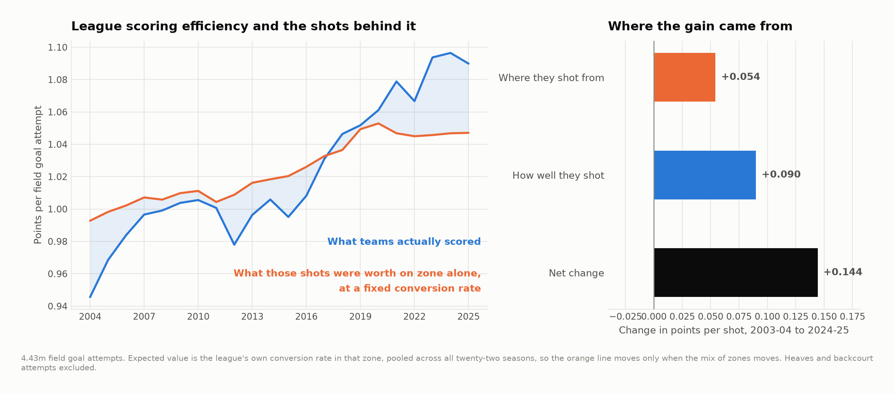
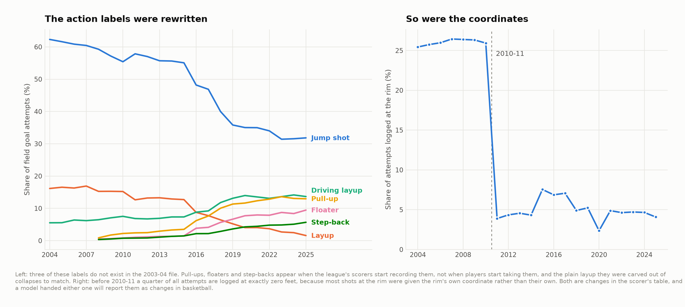
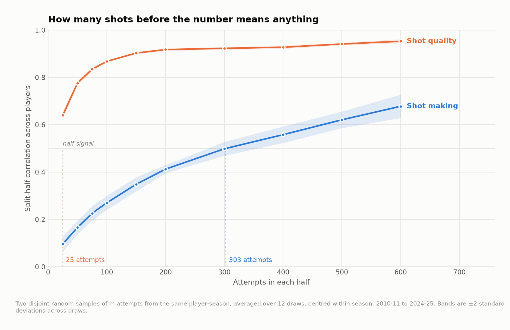

Method and revision notes
How much of the increase in points per field-goal attempt coincided with a different shot mix, and how much with better conversion from the same broad zones? This study covers public shot files from 2003–04 through 2024–25.
The identity is exact: actual points per attempt equal an expected-value baseline plus the residual. The basketball interpretation depends on the baseline. A five-zone league yardstick is used for the long-run comparison because action labels and fine coordinates changed during the sample.
The era comparison
The first row is the headline zone decomposition. Alternative rows show how the result changes with features and the time window. The location share is a descriptive allocation under each yardstick, not a causal estimate of what adopting threes did to league offense.

The underlying shot mix changed, and conversion within broad zones also changed. These data cannot separate spacing, finishing skill, defensive strategy, rule enforcement or changes in which attempts were available. The residual should not be called pure shooting talent.
Model evaluation
Gradient-boosted classifiers estimate make probability and multiply it by the value of a made shot. Predictions are generated with folds grouped by game. Those folds assess held-out games within the observed sample; they are not a chronological deployment test. A richer action-and-clock specification can fit observed shots better while being less suitable for cross-era comparison.

Reliability is a separate question

The two samples are randomly drawn from the same player-season. They are not two consecutive stretches of games. A high split correlation therefore does not establish how many early-season games a team needs before making a decision. Across-season associations are also descriptive and may reflect persistent roles and teammate context.
The player tables report shot expectation and residual conversion at the published attempt thresholds. They omit free throws, turnovers and playmaking credit, so they do not rank overall offensive value.
Reproducible release
The numerical tables and figures were regenerated together in a pinned Python environment. Earlier model outputs used incompletely specified dependency versions and do not belong in this release. Source hashes, dependency versions, calibration tables and robustness results accompany the article.
For a coaching application, combine the player's shot profile with film explaining how those opportunities arose. Improving a shot mix is not equivalent to replacing every low-value attempt with an equally available rim attempt.
The result tables are linked and rendered in the main article. Full algorithms and thresholds are in src/; source bytes are recorded in data/source_manifest.json.